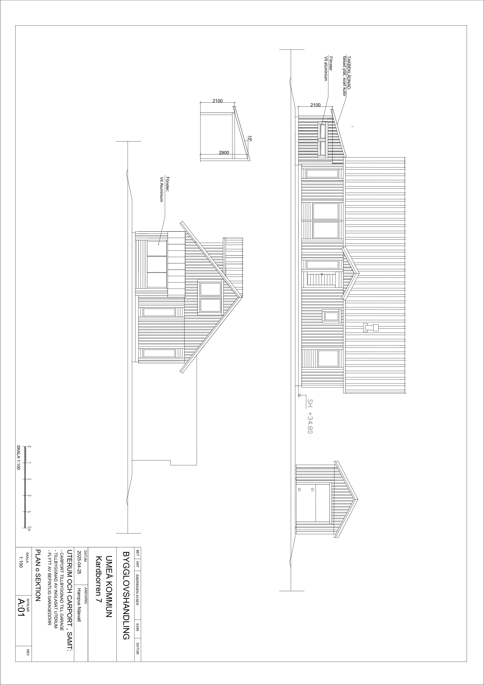
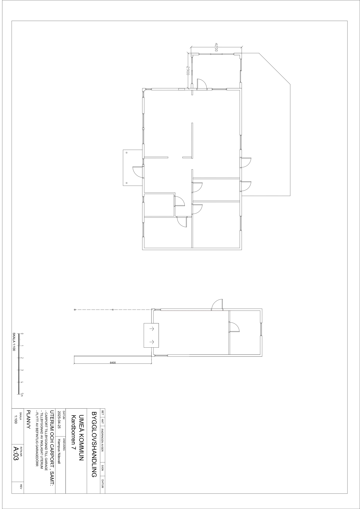
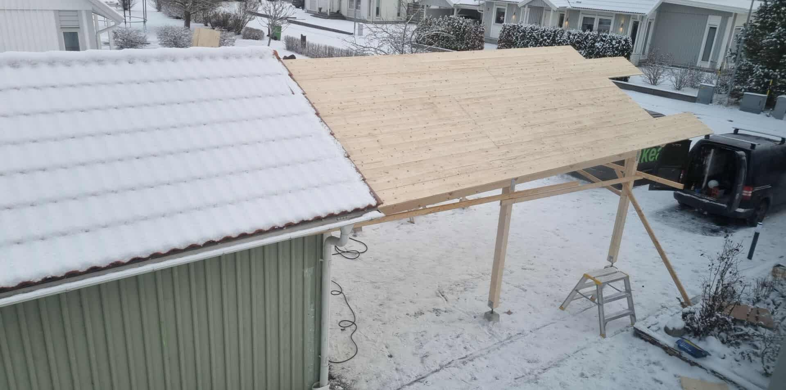
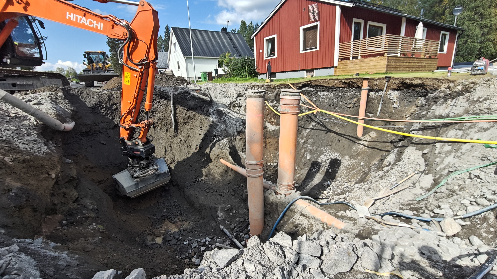

Projekt & arbetsmoment
Utvalda projekt och arbetsmoment från KMX Entreprenad.
Referensprojekt – Carport på Umedalen
Sex utvalda bilder visar projektet från bygglovsritningar till carportens byggnation. Det fullständiga projektet finns på den separata referensprojektsidan.

Fasadritning
Byggnadens utformning och fasader.

Bygglovsritning
Underlag för bygglov och fortsatt projektering.

Planritning
Planlösning med mått, rum och funktion.

Stomresning
Carportens bärande konstruktion växer fram.

Takläggning
Takstomme och takläggning under arbetets gång.

Färdig carport
Carporten efter genomförda byggmoment.
Mark, rör & ledningar
Arbetsmoment med schakt, rör, ledningsstråk, återfyllning och förberedande markarbete.

Justering av fartgupp
Återfyllning och justering av fartgupp efter att kantsten och smågatsten har satts.

Röranslutningar
Svetsning av 110 mm vattenledningar.

Kabelförläggning
Förläggning av opto- och telekabel.
Grundläggning & ytor
Förberedelser inför grund, platta och hårdgjorda ytor där nivåer och underlag styr slutresultatet.

Schaktning vid avloppsläckage
Schaktning för lagning av avloppsläckage.

Gjuten garageplatta
Gjuten garageplatta inför resning av stommen.

Formning garageplatta
Formning och justering av nivåer inför gjutning.